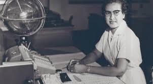

Biography

Katherine Johnson's childhood was remarkable even before she would grow up to work with NASA. Born in 1918 in West Virginia, Johnson was handpicked to be one of the three black students to integrate graduate schools in West Virginia. By age 13, she was ahead several grades and was attending the high school on West Virginia College's campus. Along with the help of the school's math professor, W. W. Schieffelin Claytor, by 1937 she had graduated West Virginia College with the highest honors and began teaching in a public school. In 1939, when West Virginia began quietly integrating the school system, Johnson left her job and enrolled in West Virginia University's math program. After, the first term however, she left to start a family. In 1953, she was offered a job at the National Advisory Committee for Aeronautics. After a short period in office, Dorothy Vaughan moved Johnson to the Maneuver Loads Branch of the Flight Research Division. Here, Johnson spent 4 short year working on fight testing. In 1956, just as she was finishing up this project, Johnson's husband died of cancer. Johnson's life would once again change in 1957 when the Soviet Union launched the Sputnik satellite. Johnson provided mathematic work for Notes on Space Technology in 1958, and NACA then became NASA.  NASA's work rapidly sped up and she did trajectory calculations for the first human space flight mission Freedom 7. Shortly after this, Johnson began working on her most notable work, the Friendship 7 mission. Johnson created a worldwide network of tracking computers that were programmed with the orbital equations of the mission. One remarkable moment was when astronaut John Glenn asked for Johnson to run the numbers through the equation one more time but by hand. Once Johnson completed this, Glenn said he was ready to go. This piece of work was such a big deal because it was a major watershed moment in the space race between the United States and the Soviet Union. Johnson retired from NASA in 1986. In 2015, President Obama honored her with the Presidential Medal of Freedom, marking her accomplishments. Johnson's character has since been played in the hit movie Hidden Figures, honoring those women who worked behind the scenes with little to no credit, but really made the missions possible. Johnson's life accomplishments are innumerable, but it is safe to say that her work forever changed the course of history.